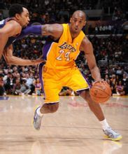
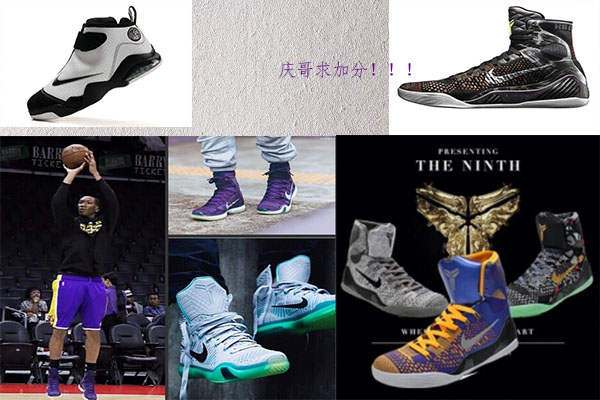

科比 耐克球鞋
科比比赛中穿上Nike Kobe 8 System 湖人队配色在不久之前湖人赢得山猫的那场比赛中，科比穿上他的最新战靴--Nike Kobe 8 System，虽然这不是第一次在比赛中穿上这款篮球鞋，但是今天穿的是湖人队配色的Nike Kobe 8 System，这可是首次出现在我们的视线。 这款篮球鞋沿用了湖人常见的黄色，融合了金属质感的银色和灰色色调，再加上紫色和充满活力的黄色。
科比·布莱恩特（Kobe Bryant，1978年8月23日—），美国职业篮球运动员，司职得分后卫。自1996年起效力于NBA洛杉矶湖人队，是前NBA篮球运动员乔·布莱恩特的儿子。 科比·布莱恩特是NBA第一个高中生后卫，帮助洛杉矶湖人队拿下5次NBA总冠军，是NBA史上最年轻的30000分先生。2次成为NBA得分王，2次NBA总决赛MVP，1次NBA年度MVP，连续15次入选NBA全明星赛，2枚奥运会金牌，于2014年11月12日加冕历史第一“打铁王”。2014年12月15日，科比·布莱恩特生涯总得分超越迈克尔·乔丹，升至历史第三位。 2015年11月30日，科比宣布本赛季结束后正式退役。2016年1月22日，科比以1,891,614票第4次成为全明星票王，入选2016年NBA全明星赛西部首发阵容。 2016年4月14日，科比NBA生涯告别战——主场对决爵士后，正式退役。
个人酷爱篮球当然了也喜欢一些球鞋！
